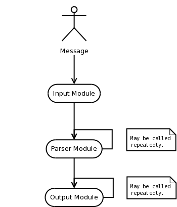

Where are the modules integrated into the Message Flow?¶
Depending on their module type, modules may access and/or modify messages at various stages during rsyslog’s processing. Note that only the “core type” (e.g. input, output) but not any type derived from it (message modification module) specifies when a module is called.
The simplified workflow is as follows:

As can be seen, messages are received by input modules, then passed to one or many parser modules, which generate the in-memory representation of the message and may also modify the message itself. The internal representation is passed to output modules, which may output a message and (with the interfaces introduced in v5) may also modify message object content.
String generator modules are not included inside this picture, because they are not a required part of the workflow. If used, they operate “in front of” the output modules, because they are called during template generation.
Note that the actual flow is much more complex and depends a lot on queue and filter settings. This graphic above is a high-level message flow diagram.